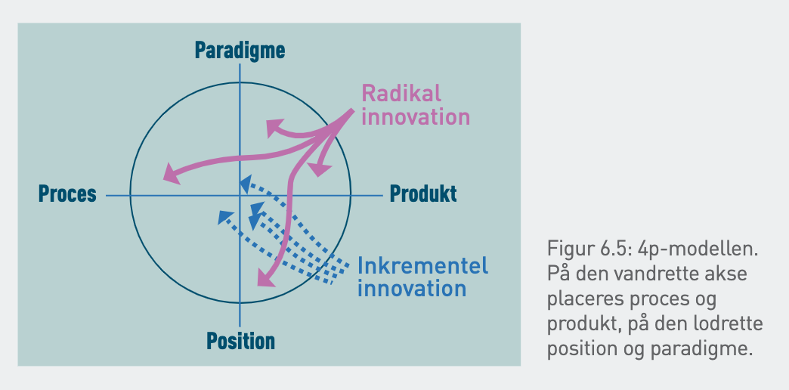

4p-modellen:
4P-modellen for innovation er en simpel måde at vurdere, hvor nytænkende et produkt eller en service er.
1. Produkt
Selve det, der bliver solgt og brugt. Det kan være en ny funktion, et nyt system eller en ny metode.
2. Proces
Hvordan produktet bliver lavet eller leveret. Det handler ikke om selve produktet, men om måden, man får det på.
3. Paradigme
Hvordan en virksomhed ændrer sin måde at tænke eller arbejde på.
4. Position
Hvordan et produkt bliver præsenteret eller hvilken målgruppe, det sælges til.

Hver af de fire områder vurderes på en skala fra inkrementel (små forbedringer) til radikal (store ændringer). Punkterne forbindes i koordinatsystemet og danner en figur, hvor arealet afspejler innovationsgraden, jo større areal, desto mere radikal innovation.